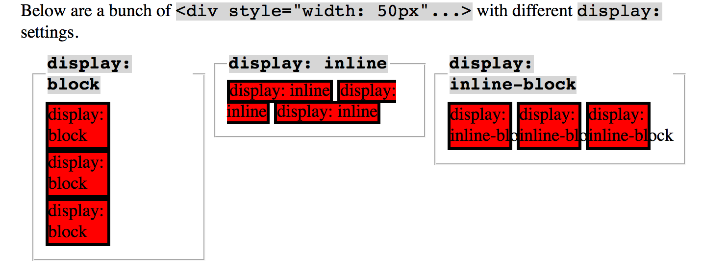

"Display" in CSS can be a very useful tool for styling in CSS if you understand how to use it correctly. The basic values for how to display an element seem simple on the surface: display: block display: inline display: inline-block But each one has a different function, and which one you need will depend both on how you want it to display what kind of HTML element you are styling so that its behavior (or the behavior you expect from it) doesn't conflict with HTML syntax. While a block has some white space above and below and can be styled with margins and padding, it forces a line break after using it. A "div" is an example of a block object. An inline element, on the other hand, does not force a break, allowing elements to site next to each other "in line." They can have margins & padding on the sides to regulate the space between other inline elements, but not top or bottom and they cannot have a width or height. A navigation bar often uses an inline element to display the main site links. Inline-block elements are hybrids of these; they have all the behavior properties of a block, but they can be placed inline. This allows for things like using divs in place of tables when structuring a website. Here's a great visual example (and further reading) from Dustwell.com: 